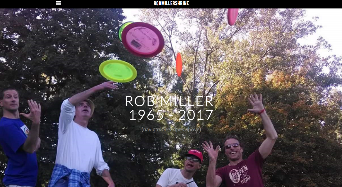

Web Development: I learned C++ and Perl at University and then self studied C, Node.js, SQL, CSS, Python, Javascript, and Elm.js.
Group Leader: I work sometimes with the MIT Media Labs startup Cortico, and had one of my meetings end up in the Cap Times I lead small groups each week at The Nehemiah Center's: Our History 2019 (a diversity workshop).
Trainer for Functional: I presented talks at Milwaukee Code Camp (conference) and Madpy (Meetup) on how to be purely Functional by compiling Elm Language into Javascript for web pages.
Teacher of Agile: I taught high school students to run sprint teams in AP Computer Science with scrum masters and daily standup meetings.
Projects
Major front-end project: Chinese Restaurant
Written in Javascript, with AJAX to populate menus and lots of CSS.
run!
Major back-end project: to do list
A server written in Node.js.
run!
Code challenges.
Javascript.
view!

Tribute Page
Writing CSS
run!
Search Window
Written in Elm and then compiled to Javascript.
run!
Format a blog
Tech blog mockup
run!
Experience
I am on the customer support team at a SAP company, Scooter Software, in Madison, WI. Our sole product, since 1998, has been the widely-used file utility Beyond Compare. (More)
Education
Node.js, Express, SQLite, ES6 with an emphasis on functional JS (Codecademy), Relational Databases with PostGreSQL (Udacity), JQuery (FreeCodeCamp); Responsive CSS (Johns Hopkins University Coursera), CS50 (Harvard University EdX),
Gulp and BEM Principles of CSS (Udemy)
Master of Science Organic Chemistry, The Ohio State University
Bachelor of Science Environmental Science, Oakland University
Meetups: Madison Area Software Developers, MadPy, Big Data Madison
About me
Life highlights: I learned to write and speak a little Mandarin while living for three years at 國立實驗高級中學 in Taiwan. I recently climbed a couple 14,000 foot peaks: Mt Shasta and Mt Whitney. (More)